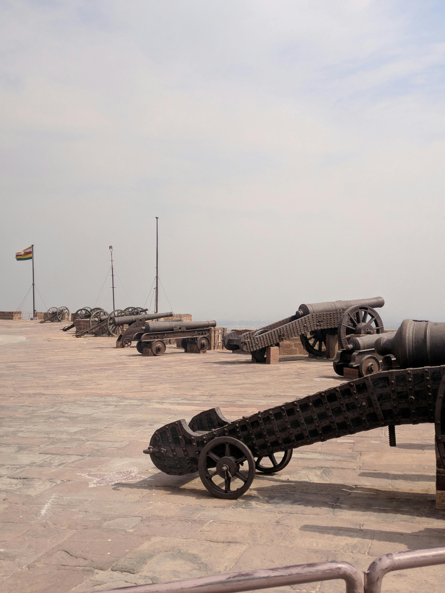
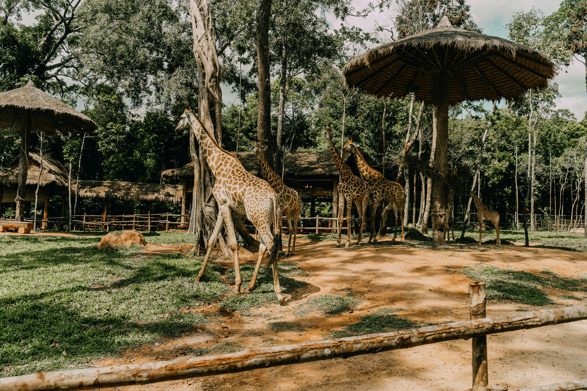
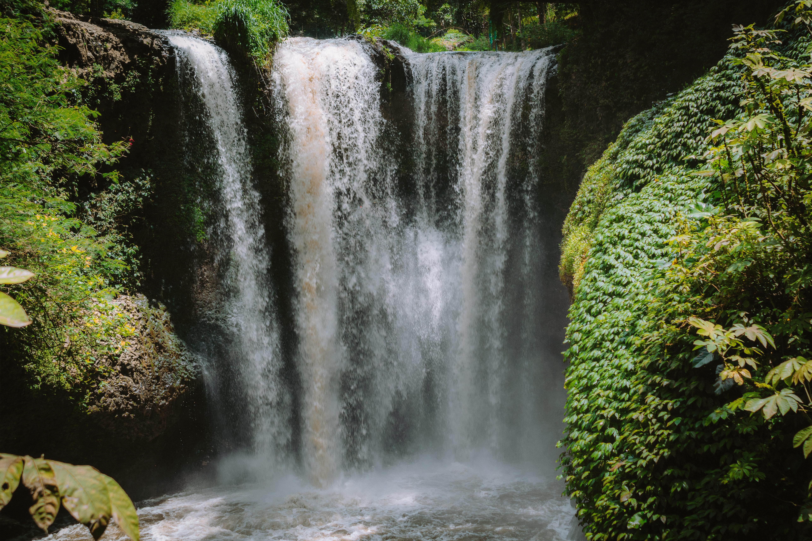
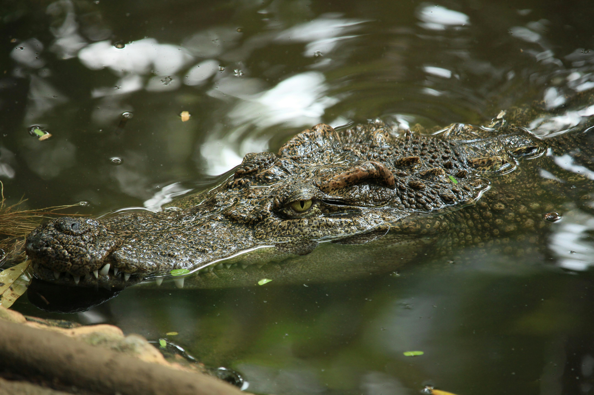
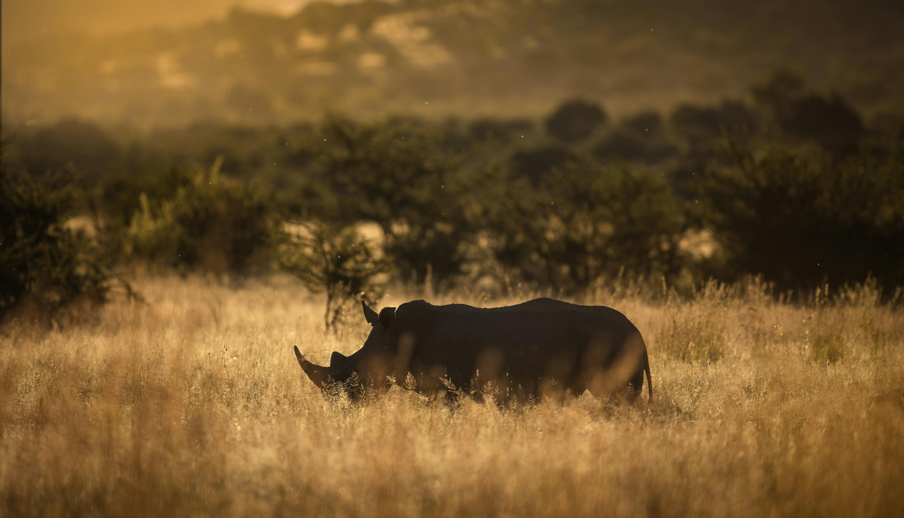

Nasze Oferty


Wycieczki:
Wasini:
Jest to malownicza wyspa, położona w sercu Oceanu Indyjskiego, która oferuje niezwykłe atrakcje dla miłośników przyrody i podróży. Podczas wycieczki będziesz miał okazję zanurzyć się w kolorowym podwodnym świecie podczas snorkelingu i nurkowania, a także spotkać delfiny, które dodadzą uroku temu niezapomnianemu przeżyciu. To doskonała okazja, by cieszyć się pięknem przyrody i poznawać fascynujący świat podwodny Kenii.

Mombasa:
Mombasa to miasto pełne fascynujących atrakcji i miejsc wartych odwiedzenia. Możesz zobaczyć tam fabrykę rzeźbienia drewna, hinduską świątynię, Bramę Mombasa oraz najstarszy targ, gdzie kupisz przyprawy, kawę i herbaty. Spacerując po starówce, dotrzesz do Fortu Jesus, a na koniec możesz zrelaksować się na Allei Baobabów, ciesząc się pięknem przyrody.
Park Haller:
W Parku Haller możesz doświadczyć niezapomnianych spotkań z dzikimi zwierzętami i odkryć fascynujący świat przyrody. Podczas karmienia żyraf, hipopotamów i krokodyli możesz obserwować te imponujące zwierzęta w ich naturalnym środowisku. Dodatkowo, w zoo możesz zobaczyć różnorodne gatunki zwierząt, od antylop po małpy, a także podziwiać piękno motyli. To niepowtarzalne doświadczenie, które pozwala cieszyć się pięknem przyrody i odkrywać jej różnorodność.
Shimba Hills:
W Shimba Hills główną atrakcją jest imponujący wodospad, który przyciąga wielu podróżnych. Jednak to nie wszystko! Jako las państwowy, Shimba Hills oferuje także możliwość obserwacji różnorodnych gatunków zwierząt, które żyją w okolicznych lasach. Spacerując po terenie parku, możesz spotkać wiele dzikich zwierząt, co sprawia, że wizyta w Shimba Hills staje się pełnym przygód doświadczeniem z naturą.
Funzi:
Funzi to miejsce, gdzie główną atrakcją są krokodyle, które przyciągają uwagę wielu odwiedzających. Jednak w Funzi można także cieszyć się możliwością pływania. To wyjątkowe połączenie, gdzie przyroda i możliwość rekreacji spotykają się w jednym miejscu, tworząc niezapomniane doświadczenie dla wszystkich, którzy odwiedzają Funzi.
Safari:
Tsavo East:
Organizuję safari do Parku Tsavo East, które może trwać 2 lub 1 dni, wyjazd jest męczący dla osób starszych i dzieci. Park Tsavo East, znany jako jeden z największych parków narodowych w Kenii, charakteryzuje się bogactwem dzikiej przyrody i różnorodnością krajobrazów. Znajduje się tu wiele gatunków zwierząt, w tym słonie, lwy, lamparty, nosorożce, żyrafy i wiele innych. Oprócz tego, park oferuje także malownicze widoki, obejmujące rozległe sawanny, skaliste wąwozy i bujne lasy rzeczne, co czyni go idealnym miejscem do obserwacji dzikiej przyrody oraz eksploracji niezwykłych terenów naturalnych.

Taita Hills:
Jest to 2 dniowa wyprawa z możliwością noclegu w charakterystycznych domkach na palach. Te domki, umieszczone na drewnianych palach, zapewniają nie tylko wyjątkowy widok na okoliczne tereny, ale także komfortowy i bezpieczny pobyt. O poranku można obserwować wschód słońca nad pięknymi wzgórzami i przyglądać się otaczającej przyrodzie, co czyni pobyt w Taita Hills jeszcze bardziej magicznym i niezapomnianym.

Masai Mara:
Masai Mara to jedno z najbardziej renomowanych miejsc na safari w Kenii. Znajduje się tam ogromne stada dzikich zwierząt, w tym słonie, lwy, lamparty i nosorożce. Park jest również domem dla corocznego Wielkiego Przemarszu Zwierząt, co stanowi spektakularne widowisko natury. Oprócz fascynujących spotkań z dziką przyrodą, Masai Mara oferuje malownicze krajobrazy i możliwość poznania kultury plemienia Masajów. To niezapomniane miejsce, które warto odwiedzić dla niepowtarzalnych doświadczeń safari i odkrywania piękna afrykańskiej przyrody.
Jezioro Naivasha:
Jezioro Naivasha to malownicze miejsce na safari w Kenii, znanie z bogatej różnorodności fauny i flory. Jest to raj dla miłośników ptaków, z ponad 400 gatunkami ptaków, w tym pelikanów, flamingów i szponiastych. Oprócz obserwacji ptaków, w okolicach jeziora można spotkać również hipopotamy i bawoły. Dodatkowo, Jezioro Naivasha oferuje możliwość relaksu i rekreacji, takie jak spacery po okolicznych terenach, rejsy łódkami po jeziorze i wędkowanie. To urokliwe miejsce, które warto odwiedzić dla niezapomnianych doświadczeń związanych z przyrodą i spokojem otaczającego środowiska.